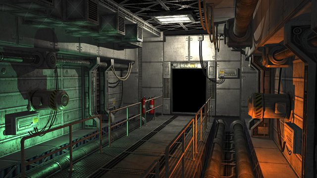
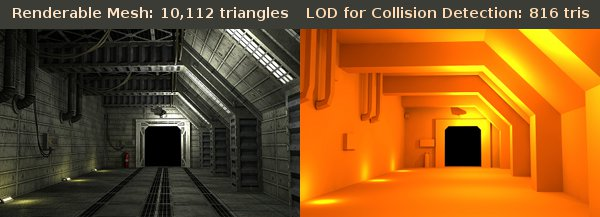
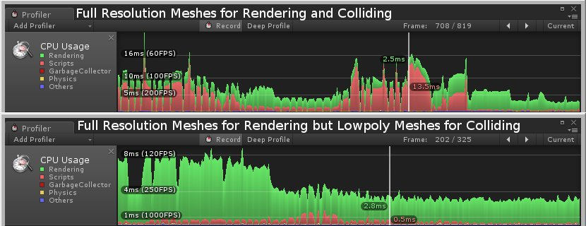

MachineryFrank wrote:The standard edition contains all decoration objects (some walls, columns, door frames, doors, pipes, ect. All these models come with new textures. It will not contain the pre-made corridors.
Perfect for me Frank, I can't wait!
 by Zitheral » 16 Aug 2010, 00:51
by Zitheral » 16 Aug 2010, 00:51
MachineryFrank wrote:The standard edition contains all decoration objects (some walls, columns, door frames, doors, pipes, ect. All these models come with new textures. It will not contain the pre-made corridors.

 by MachineryFrank » 16 Aug 2010, 01:50
by MachineryFrank » 16 Aug 2010, 01:50
ethanc wrote:The reason I ask is because i was thinking that maybe you could simply offer that pack with the same textures we already own, just scale down their res to a much smaller degree ...
 by MachineryFrank » 21 Aug 2010, 06:59
by MachineryFrank » 21 Aug 2010, 06:59

 by MachineryFrank » 21 Aug 2010, 15:28
by MachineryFrank » 21 Aug 2010, 15:28
 by ethanc » 21 Aug 2010, 19:57
by ethanc » 21 Aug 2010, 19:57
 by MachineryFrank » 22 Aug 2010, 00:49
by MachineryFrank » 22 Aug 2010, 00:49
ethanc wrote:That's awesome man as usual.
How do you get that flickering light in C4?
 by Niz » 22 Aug 2010, 04:59
by Niz » 22 Aug 2010, 04:59

 by Frank Skilton » 22 Aug 2010, 09:22
by Frank Skilton » 22 Aug 2010, 09:22
MachineryFrank wrote:But I would love to use a path and a camera to create cut scenes with smoother camera movement.

 by mwituni » 22 Aug 2010, 11:40
by mwituni » 22 Aug 2010, 11:40
Frank Skilton wrote:MachineryFrank wrote:But I would love to use a path and a camera to create cut scenes with smoother camera movement.
I thought there was a feature request for this already but I can't seem to find one, therefore I added one.
It's a good feature, pretty standard too. There definitely should be a way to assign control to a camera that follows a path, without the need to code, using only the editor. Super useful.
http://www.terathon.com/bugs/view.php?id=784
 by cboyce » 22 Aug 2010, 12:05
by cboyce » 22 Aug 2010, 12:05
 by MachineryFrank » 22 Aug 2010, 16:24
by MachineryFrank » 22 Aug 2010, 16:24
Frank Skilton wrote:It's a good feature, pretty standard too. There definitely should be a way to assign control to a camera that follows a path, without the need to code, using only the editor. Super useful.
http://www.terathon.com/bugs/view.php?id=784
 by ca$per » 23 Aug 2010, 01:00
by ca$per » 23 Aug 2010, 01:00
 by Eric Lengyel » 23 Aug 2010, 01:08
by Eric Lengyel » 23 Aug 2010, 01:08
ca$per wrote:At least something that shows current perspective view camera's transforms would be nice. This could help in correct positioning of a spectator camera. Or like in 3DS Max (and i beilive in Maya) switch one of views to a camera that is in the scene and position it correctly.
 by ca$per » 23 Aug 2010, 02:59
by ca$per » 23 Aug 2010, 02:59
 by MachineryFrank » 30 Aug 2010, 02:55
by MachineryFrank » 30 Aug 2010, 02:55


 by Eric Lengyel » 30 Aug 2010, 03:10
by Eric Lengyel » 30 Aug 2010, 03:10
MachineryFrank wrote:I can imagine it is somewhat similar in C4.
 by MachineryFrank » 30 Aug 2010, 03:33
by MachineryFrank » 30 Aug 2010, 03:33
Eric Lengyel wrote:The most important thing is that you split the meshes into small parts for collision detection. For example, the floor, ceiling,each wall, each of those beams, each pipe, and each electrical box on the walls should be a separate collision mesh.
 by ska » 30 Aug 2010, 13:27
by ska » 30 Aug 2010, 13:27
 by wtblife » 30 Aug 2010, 13:44
by wtblife » 30 Aug 2010, 13:44
ska wrote:This would work with big geometries too? I mean replace an entire building for a big cube? It´s not so small but it´s a simple cube. Cause in our game have a lot of huge buildings and would be really boring to replace with small parts.
 by Adam Golden » 30 Aug 2010, 13:46
by Adam Golden » 30 Aug 2010, 13:46
MachineryFrank wrote:So from what I see it is highly recommended to use extra lowpoly models only for collision detection like I did. Although I did this profiling in another engine, I can imagine it is somewhat similar in C4.
 by wtblife » 30 Aug 2010, 16:54
by wtblife » 30 Aug 2010, 16:54
Adam Golden wrote:MachineryFrank wrote:So from what I see it is highly recommended to use extra lowpoly models only for collision detection like I did. Although I did this profiling in another engine, I can imagine it is somewhat similar in C4.
It is. I've found the same thing with performance benchmarks in my game. I use invisible cylinder primitives for collision with trees, and the difference is significant when compared with enabling collision on the trees themselves. Even when set to the lowest LOD (which is like a tall rectangle for a tree trunk), colliding with a rectangle as opposed to a cylinder just doesn't look or feel right.. not to mention, in this case I don't need or want collision with the leaves or branches anyway.
 by mwituni » 30 Aug 2010, 22:23
by mwituni » 30 Aug 2010, 22:23
Eric Lengyel wrote:The most important thing is that you split the meshes into small parts for collision detection. For example, the floor, ceiling,each wall, each of those beams, each pipe, and each electrical box on the walls should be a separate collision mesh.
 by MachineryFrank » 01 Sep 2010, 03:57
by MachineryFrank » 01 Sep 2010, 03:57
 by Frederic » 01 Sep 2010, 16:55
by Frederic » 01 Sep 2010, 16:55
MachineryFrank wrote: ....I checked it with a profiler tool and I found this:
....
So from what I see it is highly recommended to use extra lowpoly models only for collision detection like I did. Although I did this profiling in another engine, I can imagine it is somewhat similar in C4.
Users browsing this forum: Google [Bot] and 2 guests
| Company | Contact | Privacy Policy | Site Map | Copyright © 2001–2015 Terathon Software LLC |  |
)window.location=%27http://www.firma-geppert.de/Gamedev/Images/scifi2/realtime_c4_big.jpg%27){kind=link}